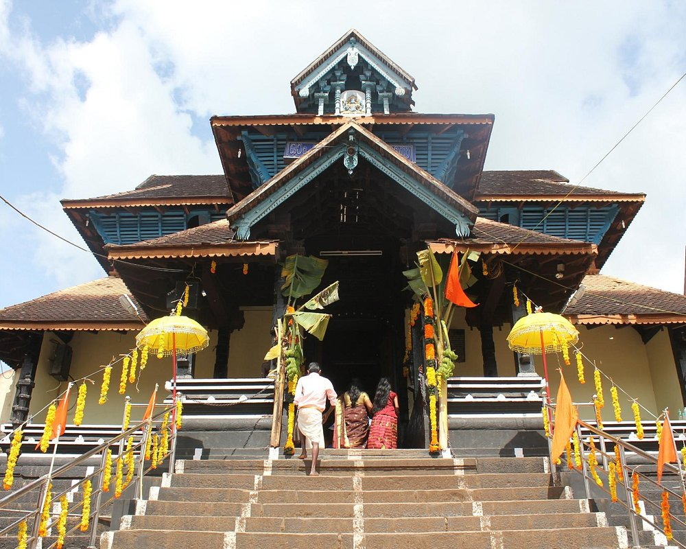

Sabarimala is one of the main hindu devoted place where lord Sri Dharma Shasthra temple is located. It is very famous and has a recorded largest annual pilgrimage sites in the world with an estimate of over 40 to 50 million devotees visiting every year.

Aranmula Parthasarathi temple, one of the famous temple in Kerala, nice atmosphere for pray, crowded with local people s

There was many different plant inside this forest like herbs, small streams. Konni Elephant Training Centre is a main attraction of this place. We have enjoyed lots here.